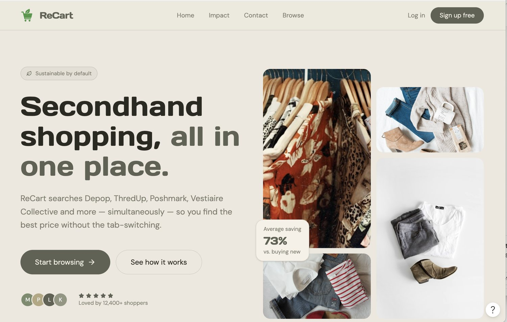
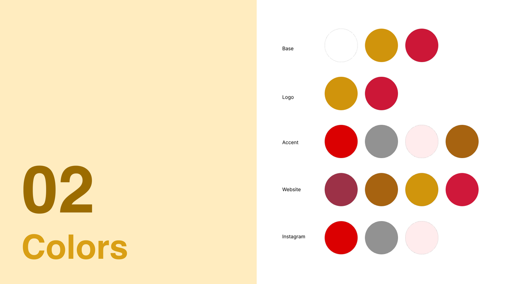
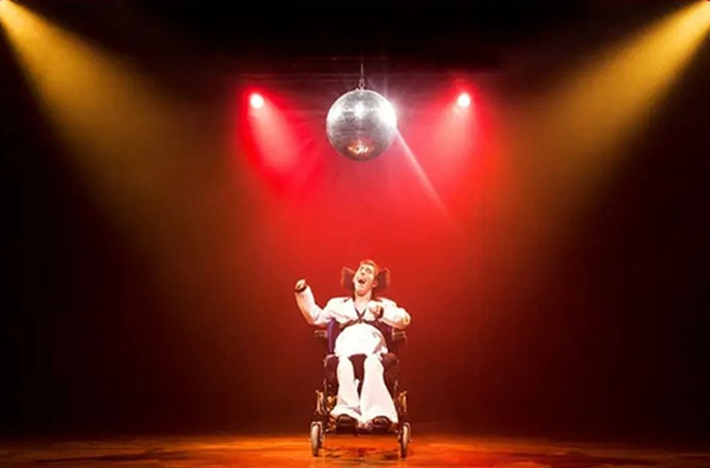

Find the real problem
Research, audit, map the friction, and turn ambiguity into a clear product question.
Four projects. The problem, the move, and the proof.
Start with ReCart ↗Different problems. Different visual worlds. One throughline: make the decision easier.

I turned fragmented marketplace browsing into one consistent search and filtering flow.
Figma / React / Next.js / Product designI gave AI one useful job: explain the trade-off behind a seat recommendation.
Recommendation UX / Prototyping / AI interaction
I made accessibility actionable and left the team with a system they could own.
WCAG / IA / Content / Design systemsI designed the pressure, timing, and information flow behind a live journalism simulation.
Experience design / Writing / FacilitationThe useful intersection of product thinking, visual craft, and enough code to make the idea real.
Research, audit, map the friction, and turn ambiguity into a clear product question.
Build flows, interactions, accessible patterns, and a visual language that holds together.
Prototype in Figma and Framer, then work in React and Next.js when code is the fastest truth test.
Document decisions so engineers, stakeholders, and the next designer can move with confidence.
One search.
Every marketplace.
Secondhand shoppers jump between marketplaces with different filters, labels, and photography.
I designed a unified browsing model, visual system, responsive behavior, and built it in React and Next.js.
The prototype makes scattered inventory feel comparable and gets people from search to decision faster.
6 sample listings
Hire-me signalA designer who can take an ambiguous product idea through interaction design and into a working front end.
Access first.
Ownership after.
A disability-led arts nonprofit needed an accessible digital presence a volunteer-run team could maintain.
I audited accessibility, reworked information architecture and content, and documented the visual system.
The team received practical navigation, contrast, brand, and publishing guidance they could continue using.

Performance photography leads instead of medicalized disability symbols.
WCAG and WAVE findings became specific changes to hierarchy, navigation, and contrast.
Brand and content guidelines made the system usable after handoff.
Hire-me signalAccessible design paired with the documentation and content thinking that keep a system useful.
A better seat.
A clearer reason.
A seat map asks people to compare budget, sightline, availability, and preference all at once.
I reframed selection around those trade-offs and designed an explainable recommendation concept.
AI reduces comparison work while keeping the final choice understandable and in the user's control.
Choose a priority and budget. The system recommends a seat and explains the trade-off.
Hire-me signalProduct thinking that gives AI a specific job and keeps people informed at the decision point.
Real pressure.
Designed on purpose.
Help a global cohort practice sourcing, verification, and deadline judgment in a live simulation.
I wrote the scenario, played characters, and controlled the timing and release of information.
Participants practiced real decisions in context, not as a passive lesson or a quiz.
Establish context and stakes.
Sequence what participants learn.
Make verification matter.
Turn judgment into action.
Hire-me signalExperience design beyond screens: sequencing information, anticipating responses, and adapting live.
I move between product design, software, accessibility, storytelling, and live events. Each gives me another way to understand what people need and how a system can help.
I'm especially interested in the next set of interfaces: how people express intent, how agents act on it, and where human judgment belongs.
LinkedIn